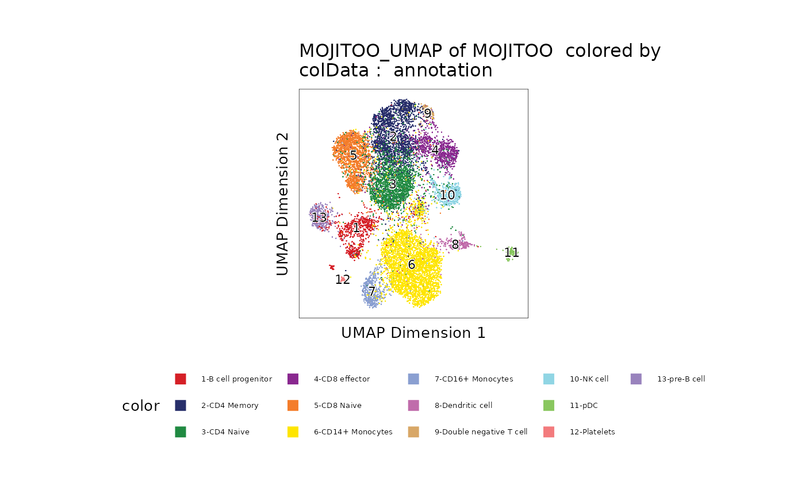

Using MOJITOO in R for ArchR
Mingbo Cheng
October 23, 2024
ArchRObject_integration.Rmd1. download data
## 2024-10-23 12:17:16 URL:https://cf.10xgenomics.com/samples/cell-arc/1.0.0/pbmc_granulocyte_sorted_10k/pbmc_granulocyte_sorted_10k_atac_fragments.tsv.gz [2051027831/2051027831] -> "pbmc_granulocyte_sorted_10k_atac_fragments.tsv.gz" [1]
## 2024-10-23 12:17:16 URL:https://cf.10xgenomics.com/samples/cell-arc/1.0.0/pbmc_granulocyte_sorted_10k/pbmc_granulocyte_sorted_10k_atac_fragments.tsv.gz.tbi [1027204/1027204] -> "pbmc_granulocyte_sorted_10k_atac_fragments.tsv.gz.tbi" [1]
## WARNING: cannot verify costalab.ukaachen.de's certificate, issued by ‘CN=GEANT OV RSA CA 4,O=GEANT Vereniging,C=NL’:
## Unable to locally verify the issuer's authority.
## 2024-10-23 12:17:16 URL:https://costalab.ukaachen.de/open_data/MOJITOO/PBMC-Multiom_annotation.tsv [400178/400178] -> "PBMC-Multiom_annotation.tsv" [1]
## 2024-10-23 12:17:18 URL:https://cf.10xgenomics.com/samples/cell-arc/1.0.0/pbmc_granulocyte_sorted_10k/pbmc_granulocyte_sorted_10k_filtered_feature_bc_matrix.h5 [162282142/162282142] -> "pbmc_granulocyte_sorted_10k_filtered_feature_bc_matrix.h5" [1]2. library
suppressPackageStartupMessages(library(MOJITOO))
suppressPackageStartupMessages(library(parallel))
suppressPackageStartupMessages(library(ArchR))## Warning: package 'BiocGenerics' was built under R version 4.1.1## Warning: package 'S4Vectors' was built under R version 4.1.3## Warning: package 'IRanges' was built under R version 4.1.3## Warning: package 'GenomeInfoDb' was built under R version 4.1.3## Warning: package 'Biobase' was built under R version 4.1.3## Warning: package 'data.table' was built under R version 4.1.3## Warning: package 'Matrix' was built under R version 4.1.3## Warning: package 'magrittr' was built under R version 4.1.3
suppressPackageStartupMessages(library(Seurat))
suppressPackageStartupMessages(library(ggsci))
suppressPackageStartupMessages(library(stringr))## Warning: package 'stringr' was built under R version 4.1.3
suppressPackageStartupMessages(library(EnsDb.Hsapiens.v86))## Warning: package 'AnnotationDbi' was built under R version 4.1.3
addArchRGenome("hg38")## Setting default genome to Hg38.
addArchRThreads(30)## Setting default number of Parallel threads to 30.3. Create ArchR proj
inputFiles <- "pbmc_granulocyte_sorted_10k_atac_fragments.tsv.gz"
ArrowFiles <- createArrowFiles(inputFiles = inputFiles,
sampleNames = "pbmc",
minTSS = 0, ##4
filterFrags = 0, ## 1000
addTileMat = T,
addGeneScoreMat = F)## filterFrags is no longer a valid input. Please use minFrags! Setting filterFrags value to minFrags!## Using GeneAnnotation set by addArchRGenome(Hg38)!
## Using GeneAnnotation set by addArchRGenome(Hg38)!## Warning: package 'Biostrings' was built under R version 4.1.3## Warning: package 'XVector' was built under R version 4.1.3## ArchR logging to : ArchRLogs/ArchR-createArrows-fa26e1254d494-Date-2024-10-23_Time-12-17-47.log
## If there is an issue, please report to github with logFile!## Cleaning Temporary Files## 2024-10-23 12:17:47 : Batch Execution w/ safelapply!, 0 mins elapsed.## (pbmc : 1 of 1) Determining Arrow Method to use!## 2024-10-23 12:17:47 : (pbmc : 1 of 1) Reading In Fragments from inputFiles (readMethod = tabix), 0.001 mins elapsed.## 2024-10-23 12:17:47 : (pbmc : 1 of 1) Tabix Bed To Temporary File, 0.001 mins elapsed.## 2024-10-23 12:18:57 : (pbmc : 1 of 1) Successful creation of Temporary File, 1.174 mins elapsed.## 2024-10-23 12:18:57 : (pbmc : 1 of 1) Creating ArrowFile From Temporary File, 1.174 mins elapsed.## 2024-10-23 12:20:04 : (pbmc : 1 of 1) Successful creation of Arrow File, 2.296 mins elapsed.## Warning: package 'gridExtra' was built under R version 4.1.3## 2024-10-23 12:21:21 : (pbmc : 1 of 1) CellStats : Number of Cells Pass Filter = 639351 , 3.578 mins elapsed.## 2024-10-23 12:21:21 : (pbmc : 1 of 1) CellStats : Median Frags = 5 , 3.578 mins elapsed.## 2024-10-23 12:21:21 : (pbmc : 1 of 1) CellStats : Median TSS Enrichment = 0.099 , 3.579 mins elapsed.## 2024-10-23 12:21:50 : (pbmc : 1 of 1) Adding Additional Feature Counts!, 4.055 mins elapsed.## 2024-10-23 12:22:15 : (pbmc : 1 of 1) Removing Fragments from Filtered Cells, 4.474 mins elapsed.## 2024-10-23 12:22:15 : (pbmc : 1 of 1) Creating Filtered Arrow File, 4.474 mins elapsed.## 2024-10-23 12:23:23 : (pbmc : 1 of 1) Finished Constructing Filtered Arrow File!, 5.606 mins elapsed.## 2024-10-23 12:23:26 : (pbmc : 1 of 1) Adding TileMatrix!, 5.653 mins elapsed.## 2024-10-23 12:26:27 : (pbmc : 1 of 1) Finished Creating Arrow File, 8.678 mins elapsed.## ArchR logging successful to : ArchRLogs/ArchR-createArrows-fa26e1254d494-Date-2024-10-23_Time-12-17-47.log
ArrowFiles <- "pbmc.arrow"
proj <- ArchRProject(ArrowFiles = ArrowFiles, outputDirectory = "PBMC", copyArrows = T, showLogo=F)## Using GeneAnnotation set by addArchRGenome(Hg38)!## Using GeneAnnotation set by addArchRGenome(Hg38)!## Validating Arrows...## Getting SampleNames...## 1
## Copying ArrowFiles to Ouptut Directory! If you want to save disk space set copyArrows = FALSE
## 1
## Getting Cell Metadata...
## 1
## Merging Cell Metadata...
## Initializing ArchRProject...
meta <- read.csv("PBMC-Multiom_annotation.tsv", sep="\t")
rownames(meta) <- paste0("pbmc#", (meta$barcode))
bc <- intersect(rownames(proj@cellColData), rownames(meta))
meta <- meta[bc, ]
proj <- proj[bc, ]
proj <- setCellCol(proj, meta=meta)
gene.coords <- genes(EnsDb.Hsapiens.v86, filter = ~ gene_biotype == "protein_coding")
ucsc.levels <- stringr::str_replace(string=paste("chr",seqlevels(gene.coords),sep=""), pattern="chrMT", replacement="chrM")
seqlevels(gene.coords) <- ucsc.levels
genebody.coords <- keepStandardChromosomes(gene.coords, pruning.mode = 'coarse')
mtxs <- Read10X_h5("pbmc_granulocyte_sorted_10k_filtered_feature_bc_matrix.h5")## Genome matrix has multiple modalities, returning a list of matrices for this genome
RNA <- mtxs[["Gene Expression"]]
colnames(RNA) <- paste0("pbmc#", colnames(RNA))
RNA <- RNA[, rownames(proj@cellColData)]
inter_gene_name <- intersect(rownames(RNA), elementMetadata(genebody.coords)$gene_name)
gtfMatch <- genebody.coords[na.omit(match(rownames(RNA), genebody.coords$gene_name))]
names(gtfMatch) <- gtfMatch$gene_name
seRNA <- SummarizedExperiment(
assays = SimpleList(counts=RNA[inter_gene_name, ]),
rowData = gtfMatch
)
proj <- addGeneExpressionMatrix(proj, seRNA)## ArchR logging to : ArchRLogs/ArchR-addGeneExpressionMatrix-fa26e74ac0a62-Date-2024-10-23_Time-12-26-57.log
## If there is an issue, please report to github with logFile!
## Overlap w/ scATAC = 1
## 2024-10-23 12:26:58 :
## Overlap Per Sample w/ scATAC : pbmc=11763
## 2024-10-23 12:26:58 :
## 2024-10-23 12:27:00 : Batch Execution w/ safelapply!, 0 mins elapsed.
## 2024-10-23 12:27:02 : Adding pbmc to GeneExpressionMatrix for Chr (1 of 23)!, 0.029 mins elapsed.
## 2024-10-23 12:27:05 : Adding pbmc to GeneExpressionMatrix for Chr (2 of 23)!, 0.07 mins elapsed.
## 2024-10-23 12:27:07 : Adding pbmc to GeneExpressionMatrix for Chr (3 of 23)!, 0.108 mins elapsed.
## 2024-10-23 12:27:10 : Adding pbmc to GeneExpressionMatrix for Chr (4 of 23)!, 0.161 mins elapsed.
## 2024-10-23 12:27:12 : Adding pbmc to GeneExpressionMatrix for Chr (5 of 23)!, 0.197 mins elapsed.
## 2024-10-23 12:27:14 : Adding pbmc to GeneExpressionMatrix for Chr (6 of 23)!, 0.233 mins elapsed.
## 2024-10-23 12:27:17 : Adding pbmc to GeneExpressionMatrix for Chr (7 of 23)!, 0.286 mins elapsed.
## 2024-10-23 12:27:20 : Adding pbmc to GeneExpressionMatrix for Chr (8 of 23)!, 0.322 mins elapsed.
## 2024-10-23 12:27:22 : Adding pbmc to GeneExpressionMatrix for Chr (9 of 23)!, 0.358 mins elapsed.
## 2024-10-23 12:27:25 : Adding pbmc to GeneExpressionMatrix for Chr (10 of 23)!, 0.41 mins elapsed.
## 2024-10-23 12:27:27 : Adding pbmc to GeneExpressionMatrix for Chr (11 of 23)!, 0.446 mins elapsed.
## 2024-10-23 12:27:29 : Adding pbmc to GeneExpressionMatrix for Chr (12 of 23)!, 0.483 mins elapsed.
## 2024-10-23 12:27:32 : Adding pbmc to GeneExpressionMatrix for Chr (13 of 23)!, 0.535 mins elapsed.
## 2024-10-23 12:27:35 : Adding pbmc to GeneExpressionMatrix for Chr (14 of 23)!, 0.57 mins elapsed.
## 2024-10-23 12:27:37 : Adding pbmc to GeneExpressionMatrix for Chr (15 of 23)!, 0.606 mins elapsed.
## 2024-10-23 12:27:40 : Adding pbmc to GeneExpressionMatrix for Chr (16 of 23)!, 0.658 mins elapsed.
## 2024-10-23 12:27:42 : Adding pbmc to GeneExpressionMatrix for Chr (17 of 23)!, 0.694 mins elapsed.
## 2024-10-23 12:27:44 : Adding pbmc to GeneExpressionMatrix for Chr (18 of 23)!, 0.731 mins elapsed.
## 2024-10-23 12:27:47 : Adding pbmc to GeneExpressionMatrix for Chr (19 of 23)!, 0.782 mins elapsed.
## 2024-10-23 12:27:49 : Adding pbmc to GeneExpressionMatrix for Chr (20 of 23)!, 0.819 mins elapsed.
## 2024-10-23 12:27:52 : Adding pbmc to GeneExpressionMatrix for Chr (21 of 23)!, 0.855 mins elapsed.
## 2024-10-23 12:27:55 : Adding pbmc to GeneExpressionMatrix for Chr (22 of 23)!, 0.905 mins elapsed.
## 2024-10-23 12:27:57 : Adding pbmc to GeneExpressionMatrix for Chr (23 of 23)!, 0.941 mins elapsed.
## ArchR logging successful to : ArchRLogs/ArchR-addGeneExpressionMatrix-fa26e74ac0a62-Date-2024-10-23_Time-12-26-57.log4. RNA & ATAC dimension reductions
proj <- addIterativeLSI(ArchRProj = proj,
useMatrix = "TileMatrix",
name = "IterativeLSI",
iterations = 2,
varFeatures = 25000,
dimsToUse = 1:30)## Checking Inputs...## ArchR logging to : ArchRLogs/ArchR-addIterativeLSI-fa26e48c33538-Date-2024-10-23_Time-12-28-01.log
## If there is an issue, please report to github with logFile!## 2024-10-23 12:28:01 : Computing Total Across All Features, 0 mins elapsed.## 2024-10-23 12:28:02 : Computing Top Features, 0.016 mins elapsed.## ###########
## 2024-10-23 12:28:04 : Running LSI (1 of 2) on Top Features, 0.046 mins elapsed.
## ############# 2024-10-23 12:28:04 : Sampling Cells (N = 10000) for Estimated LSI, 0.047 mins elapsed.## 2024-10-23 12:28:04 : Creating Sampled Partial Matrix, 0.047 mins elapsed.## 2024-10-23 12:28:33 : Computing Estimated LSI (projectAll = FALSE), 0.523 mins elapsed.## 2024-10-23 12:29:47 : Identifying Clusters, 1.772 mins elapsed.## 2024-10-23 12:30:02 : Identified 6 Clusters, 2.016 mins elapsed.## 2024-10-23 12:30:02 : Saving LSI Iteration, 2.016 mins elapsed.## 2024-10-23 12:30:16 : Creating Cluster Matrix on the total Group Features, 2.247 mins elapsed.## 2024-10-23 12:30:30 : Computing Variable Features, 2.474 mins elapsed.## ###########
## 2024-10-23 12:30:30 : Running LSI (2 of 2) on Variable Features, 2.477 mins elapsed.
## ############# 2024-10-23 12:30:30 : Creating Partial Matrix, 2.477 mins elapsed.## 2024-10-23 12:30:59 : Computing LSI, 2.964 mins elapsed.## 2024-10-23 12:31:22 : Finished Running IterativeLSI, 3.345 mins elapsed.
object <- CreateSeuratObject(counts=RNA, assay="RNA")
object <- NormalizeData(object, normalization.method = "LogNormalize", scale.factor = 10000, verbose=F)
object <- FindVariableFeatures(object, nfeatures=3000, verbose=F)
object <- ScaleData(object, verbose=F)
object <- RunPCA(object, npcs=50, reduction.name="RNA_PCA", verbose=F)
proj <- setDimRed(proj, mtx=Embeddings(object[["RNA_PCA"]]), type="reducedDims", reduction.name="RNA_PCA")
saveArchRProject(proj)## Saving ArchRProject...## Loading ArchRProject...## Successfully loaded ArchRProject!##
## / |
## / \
## . / |.
## \\\ / |.
## \\\ / `|.
## \\\ / |.
## \ / |\
## \\#####\ / ||
## ==###########> / ||
## \\##==......\ / ||
## ______ = =|__ /__ || \\\
## ,--' ,----`-,__ ___/' --,-`-===================##========>
## \ ' ##_______ _____ ,--,__,=##,__ ///
## , __== ___,-,__,--'#' ===' `-' | ##,-/
## -,____,---' \\####\\________________,--\\_##,/
## ___ .______ ______ __ __ .______
## / \ | _ \ / || | | | | _ \
## / ^ \ | |_) | | ,----'| |__| | | |_) |
## / /_\ \ | / | | | __ | | /
## / _____ \ | |\ \\___ | `----.| | | | | |\ \\___.
## /__/ \__\ | _| `._____| \______||__| |__| | _| `._____|
## ##
## ___ .______ ______ __ __ .______
## / \ | _ \ / || | | | | _ \
## / ^ \ | |_) | | ,----'| |__| | | |_) |
## / /_\ \ | / | | | __ | | /
## / _____ \ | |\ \\___ | `----.| | | | | |\ \\___.
## /__/ \__\ | _| `._____| \______||__| |__| | _| `._____|
## ## class: ArchRProject
## outputDirectory: /data/sz753404/git_code/MOJITOO/vignettes/PBMC
## samples(1): pbmc
## sampleColData names(1): ArrowFiles
## cellColData names(20): Sample TSSEnrichment ... Gex_MitoRatio
## Gex_RiboRatio
## numberOfCells(1): 11763
## medianTSS(1): 13.659
## medianFrags(1): 134865. RUN MOJITOO
proj <- loadArchRProject("PBMC", showLogo=F)## Successfully loaded ArchRProject!
proj <- mojitoo(
object=proj,
reduction.list = list("RNA_PCA", "IterativeLSI"),
dims.list = list(1:50, 1:30),
is.reduction.center=T,
is.reduction.scale=T,
reduction.name='MOJITOO'
)## processing RNA_PCA## adding IterativeLSI## 1 round cc 29
proj <- addUMAP(
ArchRProj = proj,
reducedDims = "MOJITOO",
name = "MOJITOO_UMAP",
nNeighbors = 30,
minDist = 0.5,
metric = "cosine"
)## 12:31:47 UMAP embedding parameters a = 0.583 b = 1.334## 12:31:47 Read 11763 rows and found 29 numeric columns## 12:31:47 Using Annoy for neighbor search, n_neighbors = 30## 12:31:47 Building Annoy index with metric = cosine, n_trees = 50## 0% 10 20 30 40 50 60 70 80 90 100%## [----|----|----|----|----|----|----|----|----|----|## **************************************************|
## 12:31:48 Writing NN index file to temp file /tmp/Rtmpbwz0TN/filefa26e6f841aa7
## 12:31:48 Searching Annoy index using 64 threads, search_k = 3000
## 12:31:48 Annoy recall = 100%
## 12:31:49 Commencing smooth kNN distance calibration using 64 threads with target n_neighbors = 30
## 12:31:51 Initializing from normalized Laplacian + noise (using irlba)
## 12:31:51 Commencing optimization for 200 epochs, with 461100 positive edges
## 12:31:57 Optimization finished
## 12:31:57 Creating temp model dir /tmp/Rtmpbwz0TN/dirfa26e2260917e
## 12:31:57 Creating dir /tmp/Rtmpbwz0TN/dirfa26e2260917e
## 12:31:58 Changing to /tmp/Rtmpbwz0TN/dirfa26e2260917e
## 12:31:58 Creating /data/sz753404/git_code/MOJITOO/vignettes/PBMC/Embeddings/Save-Uwot-UMAP-Params-MOJITOO-fa26e2cf20242-Date-2024-10-23_Time-12-31-57.tar6. UMAP of True labels
p <- plotEmbedding(ArchRProj = proj, colorBy = "cellColData", name = "annotation", embedding = "MOJITOO_UMAP")## ArchR logging to : ArchRLogs/ArchR-plotEmbedding-fa26e2e6ed43f-Date-2024-10-23_Time-12-31-58.log
## If there is an issue, please report to github with logFile!## Getting UMAP Embedding## ColorBy = cellColData## Plotting Embedding## 1
## ArchR logging successful to : ArchRLogs/ArchR-plotEmbedding-fa26e2e6ed43f-Date-2024-10-23_Time-12-31-58.log
p
7. sessionInfo
## R version 4.1.0 (2021-05-18)
## Platform: x86_64-conda-linux-gnu (64-bit)
## Running under: Rocky Linux 8.10 (Green Obsidian)
##
## Matrix products: default
## BLAS/LAPACK: /data/sz753404/miniconda3/envs/schema/lib/libopenblasp-r0.3.21.so
##
## locale:
## [1] LC_CTYPE=en_US.utf-8 LC_NUMERIC=C
## [3] LC_TIME=en_US.UTF-8 LC_COLLATE=en_US.utf-8
## [5] LC_MONETARY=de_DE.UTF-8 LC_MESSAGES=en_US.utf-8
## [7] LC_PAPER=de_DE.UTF-8 LC_NAME=C
## [9] LC_ADDRESS=C LC_TELEPHONE=C
## [11] LC_MEASUREMENT=de_DE.UTF-8 LC_IDENTIFICATION=C
##
## attached base packages:
## [1] grid stats4 parallel stats graphics grDevices utils
## [8] datasets methods base
##
## other attached packages:
## [1] uwot_0.1.14 nabor_0.5.0
## [3] gridExtra_2.3 Rsamtools_2.8.0
## [5] BSgenome.Hsapiens.UCSC.hg38_1.4.3 BSgenome_1.60.0
## [7] rtracklayer_1.52.1 Biostrings_2.62.0
## [9] XVector_0.34.0 EnsDb.Hsapiens.v86_2.99.0
## [11] ensembldb_2.16.4 AnnotationFilter_1.16.0
## [13] GenomicFeatures_1.44.2 AnnotationDbi_1.56.2
## [15] stringr_1.5.0 ggsci_2.9
## [17] SeuratObject_4.1.3 Seurat_4.3.0
## [19] ArchR_1.0.1 magrittr_2.0.3
## [21] rhdf5_2.36.0 Matrix_1.5-3
## [23] data.table_1.14.8 SummarizedExperiment_1.22.0
## [25] Biobase_2.54.0 GenomicRanges_1.44.0
## [27] GenomeInfoDb_1.30.1 IRanges_2.28.0
## [29] S4Vectors_0.32.4 BiocGenerics_0.40.0
## [31] MatrixGenerics_1.4.3 matrixStats_0.62.0
## [33] ggplot2_3.4.1 MOJITOO_1.0
##
## loaded via a namespace (and not attached):
## [1] rappdirs_0.3.3 scattermore_0.8 ragg_1.3.3
## [4] tidyr_1.2.1 bit64_4.0.5 knitr_1.42
## [7] irlba_2.3.5.1 DelayedArray_0.18.0 rpart_4.1.19
## [10] KEGGREST_1.34.0 RCurl_1.98-1.10 doParallel_1.0.16
## [13] generics_0.1.3 cowplot_1.1.1 RSQLite_2.3.0
## [16] RANN_2.6.1 future_1.28.0 bit_4.0.5
## [19] spatstat.data_3.0-0 xml2_1.3.3 httpuv_1.6.5
## [22] assertthat_0.2.1 xfun_0.37 hms_1.1.2
## [25] jquerylib_0.1.4 evaluate_0.20 promises_1.2.0.1
## [28] fansi_1.0.4 restfulr_0.0.13 progress_1.2.2
## [31] dbplyr_2.3.1 igraph_1.4.1 DBI_1.1.3
## [34] htmlwidgets_1.6.1 spatstat.geom_3.0-3 purrr_1.0.1
## [37] ellipsis_0.3.2 ks_1.13.3 dplyr_1.1.0
## [40] backports_1.4.1 biomaRt_2.48.3 deldir_1.0-6
## [43] vctrs_0.5.2 Cairo_1.5-15 here_1.0.1
## [46] ROCR_1.0-11 abind_1.4-5 withr_2.5.0
## [49] cachem_1.0.7 Gviz_1.36.2 progressr_0.10.1
## [52] checkmate_2.1.0 sctransform_0.3.5 GenomicAlignments_1.28.0
## [55] prettyunits_1.1.1 mclust_5.4.9 goftest_1.2-3
## [58] cluster_2.1.4 lazyeval_0.2.2 crayon_1.5.2
## [61] hdf5r_1.3.5 spatstat.explore_3.0-5 labeling_0.4.2
## [64] pkgconfig_2.0.3 nlme_3.1-160 ProtGenerics_1.26.0
## [67] nnet_7.3-18 rlang_1.0.6 globals_0.16.1
## [70] lifecycle_1.0.3 miniUI_0.1.1.1 filelock_1.0.2
## [73] BiocFileCache_2.0.0 dichromat_2.0-0.1 rprojroot_2.0.3
## [76] polyclip_1.10-4 lmtest_0.9-40 Rhdf5lib_1.16.0
## [79] zoo_1.8-10 base64enc_0.1-3 ggridges_0.5.3
## [82] GlobalOptions_0.1.2 png_0.1-8 viridisLite_0.4.1
## [85] rjson_0.2.20 bitops_1.0-7 KernSmooth_2.23-20
## [88] rhdf5filters_1.4.0 blob_1.2.3 shape_1.4.6
## [91] parallelly_1.32.1 spatstat.random_3.0-1 jpeg_0.1-9
## [94] scales_1.2.1 memoise_2.0.1 plyr_1.8.8
## [97] ica_1.0-3 zlibbioc_1.40.0 hdrcde_3.4
## [100] compiler_4.1.0 BiocIO_1.2.0 RColorBrewer_1.1-3
## [103] clue_0.3-60 fitdistrplus_1.1-8 cli_3.6.0
## [106] listenv_0.8.0 patchwork_1.1.2 pbapply_1.7-0
## [109] htmlTable_2.3.0 Formula_1.2-4 MASS_7.3-58.1
## [112] tidyselect_1.2.0 stringi_1.7.12 textshaping_0.3.6
## [115] highr_0.10 yaml_2.3.7 latticeExtra_0.6-29
## [118] ggrepel_0.9.3 sass_0.4.5 VariantAnnotation_1.38.0
## [121] tools_4.1.0 future.apply_1.9.0 circlize_0.4.13
## [124] rstudioapi_0.14 foreach_1.5.2 foreign_0.8-84
## [127] farver_2.1.1 Rtsne_0.16 digest_0.6.31
## [130] pracma_2.3.8 shiny_1.7.2 Rcpp_1.0.10
## [133] later_1.3.0 RcppAnnoy_0.0.19 fda_5.5.1
## [136] httr_1.4.5 biovizBase_1.40.0 ComplexHeatmap_2.11.1
## [139] colorspace_2.1-0 XML_3.99-0.13 fs_1.6.1
## [142] tensor_1.5 rainbow_3.6 reticulate_1.25
## [145] splines_4.1.0 spatstat.utils_3.1-0 pkgdown_2.0.3
## [148] sp_1.5-1 plotly_4.10.1 systemfonts_1.0.4
## [151] xtable_1.8-4 jsonlite_1.8.4 fds_1.8
## [154] corpcor_1.6.10 R6_2.5.1 Hmisc_5.0-1
## [157] ramify_0.3.3 pillar_1.8.1 htmltools_0.5.4
## [160] mime_0.12 glue_1.6.2 fastmap_1.1.1
## [163] BiocParallel_1.28.3 deSolve_1.32 codetools_0.2-19
## [166] pcaPP_2.0-1 mvtnorm_1.1-3 utf8_1.2.3
## [169] lattice_0.20-45 bslib_0.4.2 spatstat.sparse_3.0-0
## [172] tibble_3.2.0 curl_5.0.0 leiden_0.4.2
## [175] gtools_3.9.4 survival_3.5-5 rmarkdown_2.20
## [178] desc_1.4.2 munsell_0.5.0 GetoptLong_1.0.5
## [181] GenomeInfoDbData_1.2.7 iterators_1.0.14 reshape2_1.4.4
## [184] gtable_0.3.1